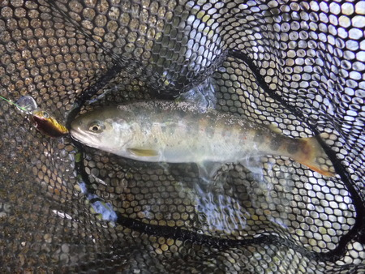
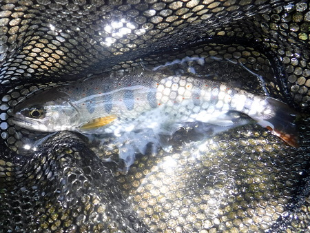
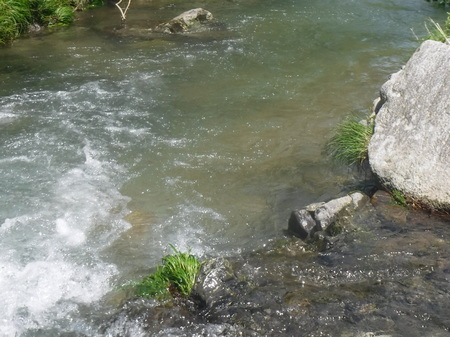

釣行日誌 故郷編
2023/05/10 寒さに震えて缶コーヒー
この間、良い思いをした川へ、今日もバイクで突撃。途中、寒さに震えてコンビニに寄り、缶コーヒーを飲む。
現地に着くと、絶好の水況、水色である。餌釣りのおじさんが１人、高い道路の護岸上から竿を出していた。
入渓、先回よりも大きな魚が釣れることを願いつつ。今日は少し上流の林から。
と、ウェーディングスタッフを持ってくるのを忘れ、ナタで落ちていた枝を切って応急の杖を作る。常に、ナタは持って歩くべし。渉り終えて、杖をベルトに刺す。
例の長トロ淵で１尾。こんなに安くて本当に釣れるのかなと案じていた中国製ミノーに良型が喰い付いた。
『釣れるじゃん！』

これだけ活躍したなら、また買おうかな？ 何と言っても１個 約 570円ほど、送料無料で送ってくれるのだ。
さらに釣り下るが反応は薄い。大橋の下も沈黙。
と、ここで、肝心のスポーツ飲料を入れたボトルをストラップベルトごと紛失。おそらく、杖をベルト刺した時に落としたのだろう。
バイクを停めた場所に戻り、フロントフォークにロッドを括り付けて移動する。懐かしの、かなり上流の集落から再度入渓。竹藪をくぐり抜け、良さそうなポイントにフローティングミノーを撃ち込んで行く。
この増水に、対岸のへんなヘチから出た。大きくは無いが綺麗な１尾

渓相は素晴らしいが、魚影は少ないのが、玉に瑕。のこの川であった。まぁ人も少ないので助かるけど。
増水して水位の高い淵のアタマを逆引きして来ると、ラパラに激しくアタックして来た。しかし、寸前の所で見切られた。しつこく何度も引いてみるが、後は、なしのつぶてだった。

沢から道路へ戻る気になって、淵の上流から沢へ歩み込む。そして、色気を出して沢を攻めるが沈黙。
沢から林へと、這いつくばって登れたが、道までの間で七転八倒する。両腕には切り傷と打ち身。何のためのリハビリかわからない。(笑)
まぁ、しかし、今日も魚の顔が見られたので、良しとしよう。
釣行日誌 故郷編 目次へ
サイトマップ
ホームへ
お問い合わせ